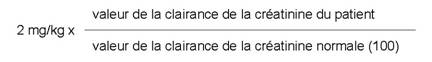

RÉSUMÉ DES CARACTÉRISTIQUES DU PRODUIT
ANSM - Mis à jour le : 13/10/2011
NETROMICINE 50 mg/2 ml PEDIATRIQUE, solution injectable
2. COMPOSITION QUALITATIVE ET QUANTITATIVE
Nétilmicine base ................................................................................................................................ 50 mg
sous forme de sulfate de nétilmicine
Pour une ampoule de 2 ml.
Excipient: la teneur en sulfite de sodium exprimée en anhydride sulfureux est de 2 mg par ampoule de 2 ml.
Pour la liste complète des excipients, voir rubrique 6.1.
Solution injectable.
4.1. Indications thérapeutiques
Elles procèdent de l'activité antibactérienne et des caractères pharmacocinétiques de la nétilmicine. Elles tiennent compte à la fois des études cliniques auxquelles a donné lieu le médicament et de sa place dans l'éventail des produits antibactériens actuellement disponibles.
Elles sont limitées:
· aux infections à bacilles à Gram négatif définis comme sensibles, notamment dans leurs manifestations rénales et urologiques.
· l'association de la nétilmicine avec un autre antibiotique pourra être justifiée dans certaines infections à germes sensibles en se basant sur les données bactériologiques, en particulier dans leurs manifestations:
o rénales, urologiques et génitales,
o septicémiques et endocarditiques,
o méningées (en y adjoignant un traitement local),
o respiratoires,
o cutanées (staphylococcie cutanée maligne de la face),
o articulaires.
· à la prophylaxie des infections post-opératoires pour les résections transuréthrales de prostate.
Il convient de tenir compte des recommandations officielles concernant l'utilisation appropriée des antibactériens.
4.2. Posologie et mode d'administration
La posologie est la même, que l'antibiotique soit administré par voie intramusculaire ou en perfusion veineuse.
Chez le sujet à fonction rénale normale
· Adultes
o Traitement curatif
4 à 6 mg/kg/jour en 2 ou 3 injections IM.
D'une façon générale, les posologies les plus basses seront utilisées dans le traitement des infections urinaires non compliquées et les posologies les plus élevées dans le traitement des infections systémiques.
Les posologies seront également adaptées à la sévérité de l'infection, à l'état et à l'âge du patient.
Dans les infections particulièrement sévères, on peut utiliser jusqu'à 7,5 mg/kg/jour à raison de 3 injections IM par 24 heures. La posologie sera ramenée à 6 mg/kg/jour ou moins dès qu'une amélioration sera obtenue, habituellement au bout de 48 heures.
o Traitement prophylactique
Prophylaxie des infections post-opératoires en chirurgie: l'antibioprophylaxie doit être de courte durée, le plus souvent limitée à la période per-opératoire, 24 heures parfois, mais jamais plus de 48 heures.
200 mg administrés en dose unique:
§ 30 minutes avant le début de l'intervention pour la voie IV en perfusion de 30 minutes,
§ 1 heure avant le début de l'intervention pour la voie IM.
· Enfants
6 à 7,5 mg/kg/jour, soit 2 à 2,5 mg/kg toutes les 8 heures, en injections IM.
· Nourrissons
6 à 7,5 mg/kg/jour, soit 2 à 2,5 mg/kg toutes les 8 heures, en injections IM, sous contrôle des taux sériques de l'antibiotique.
Depuis la mise à disposition des aminosides, il a été montré qu'il était possible par la même posologie quotidienne de réduire le nombre d'administrations. Classiquement le nombre d'injection était de 3 par jour, notamment pour les posologies maximum, parfois de 2 par jour. L'expérience acquise indique qu'en général le nombre d'injection est de 2 voire une seule par jour:
· La dose quotidienne peut être administrée en une seule injection quotidienne (IM ou perfusion courte):
o chez les patients de moins de 65 ans,
o à fonction rénale normale,
o lorsque le traitement n'excède pas 10 jours,
o en l'absence de neutropénie,
o à l'exclusion des infections à germes à Gram positif,
o pour des infections à germes à Gram négatif, à l'exclusion des Pseudomonas et des Serratia.
Dans ces circonstances, une efficacité au moins identique et une tolérance parfois meilleure ont été démontrées avec une injection quotidienne par rapport aux modalités classiques (q. 8 heures).
· Dans les autres cas, l'administration bi-quotidienne de la dose usuelle est le plus souvent recommandée, en dehors de l'insuffisance rénale qui implique le maintien des mesures habituelles.
Les dosages plasmatiques sont utiles lorsque le traitement doit dépasser 7 à 10 jours; une concentration résiduelle inférieure à 2 µg/ml indique que le rythme d'administration choisi est adapté aux capacités d'épuration du patient.
Chez l'insuffisant rénal
Il est indispensable de procéder à un ajustement de la posologie, de surveiller, de façon régulière, les fonctions rénale, cochléaire et vestibulaire et de pratiquer, dans toute la mesure du possible, des dosages sériques de contrôle.
Les valeurs de la créatinine sérique ou de la clairance de la créatinine endogène sont les meilleurs tests pour apprécier l'état de la fonction rénale et procéder à une adaptation de la posologie de la nétilmicine:
· Ajustement de la posologie en fonction des valeurs de la créatinine sérique
Il est possible:
o soit de conserver une dose unitaire de 2 mg/kg et d'espacer le rythme des injections. L'intervalle (en heures) entre deux doses unitaires est obtenu en multipliant par 0,8 la valeur de la créatinine sérique (en mg/ml).
o soit de conserver un intervalle de 8 heures entre les injections en réduisant la dose unitaire administrée. Dans ce cas, après une dose de charge de 2 mg/kg, on injecte toutes les 8 heures une dose réduite obtenue en divisant la dose de charge par le dixième de la valeur de la créatinine sérique (en mg/l).
· Ajustement de la posologie en fonction de la clairance de la créatinine endogène
On procède à une injection initiale de 2 mg/kg. Les doses suivantes à réinjecter toutes les 8 heures sont calculées selon la formule:

· Dans l'hémodialyse périodique
Injection unique de 2 mg/kg, par voie IV lente, à la fin de chaque séance de dialyse.
MODE D'ADMINISTRATION
La voie d'administration habituelle de la nétilmicine est la voie IM.
On peut également utiliser la voie IV.
Chez l'adulte, la dose unitaire de la nétilmicine doit être diluée dans 50 à 200 ml de solution injectable de chlorure de sodium à 0,9 pour cent ou de glucose à 5 pour cent.
Chez le nourrisson et l'enfant, le volume de solution sera adapté aux besoins de réhydratation des patients.
La durée de la perfusion doit être comprise entre une demi-heure et deux heures.
Ce médicament ne doit jamais être utilisé en cas:
· d'allergie aux antibiotiques de la famille des aminosides,
· de myasthénie,
· chez les prématurés et nouveau-nés à terme en raison de la présence d'alcool benzylique.
En effet l'alcool benzylique peut entraîner une acidose métabolique, une détresse vitale: gasping syndrom avec détérioration de l'état neurologique et défaillance cardiorespiratoire. Le métabolite, l'acide benzoïque, peut déplacer la bilirubine. Ces accidents peuvent être mortels. Les dose-seuils à risque paraissent se situer à 90 mg/kg/jour,
· d'administration simultanée avec d'autres aminosides (voir rubrique 4.5).
Ce médicament ne doit généralement pas être utilisé:
· pendant la grossesse (voir rubrique 4.6),
· en association avec les polymyxines par voie parentérale (voir rubrique 4.5),
· en association avec la toxine botulique (voir rubrique 4.5).
4.4. Mises en garde spéciales et précautions d'emploi
Chez les sujets porteurs d'anomalie vestibulaire et cochléaire, la nétilmicine ne peut être utilisée que lorsque le bénéfice attendu peut être considéré comme supérieur au risque.
La néphrotoxicité et l'ototoxicité de la nétilmicine imposent les précautions d'emploi suivantes:
· en cas d'insuffisance rénale, n'utiliser la nétilmicine qu'en cas de stricte nécessité et adapter la posologie en fonction de la clairance de la créatinine. Une surveillance médicale portant sur les fonctions rénale et auditive est nécessaire. Les taux sériques de l'antibiotique seront contrôlés, dans toute la mesure du possible, afin d'éviter de dépasser le seuil toxique pour l'appareil cochléo-vestibulaire ainsi qu'une accumulation sérique et tissulaire qui pourrait aggraver l'insuffisance rénale et/ou entraîner une atteinte ototoxique;
· compte-tenu de la pharmacocinétique du produit et du mécanisme de l'ototoxicité et de la néphrotoxicité, éviter les traitements itératifs et/ou prolongés, particulièrement chez les sujets âgés;
· éviter d'associer la nétilmicine aux diurétiques très actifs et en général à tout produit ototoxique et néphrotoxique.
Ce médicament contient 10 mg d'alcool benzylique par ml de solution injectable.
Ce médicament contient 2,03 mg de sodium par ml; en tenir compte chez les personnes suivant un régime hyposodé strict.
4.5. Interactions avec d'autres médicaments et autres formes d'interactions
+ Aminosides
En cas d'administration simultanée, risque accru de néphrotoxicité et d'ototoxicité.
+ Polymyxines (voie parentérale)
Addition des effets néphrotoxiques.
Si l'association ne peut être évitée, surveillance stricte avec une justification bactériologique indiscutable.
+ Toxine botulique
Risque d'augmentation des effets de la toxine botulique avec les aminosides (par extrapolation à partir des effets observés au cours du botulisme).
Utiliser un autre antibiotique.
Associations faisant l'objet de précautions d’emploi
+ Céfalotine
L'augmentation de la néphrotoxicité des aminosides par la céfalotine est discutée. Surveillance de la fonction rénale.
+ Curarisants
Potentialisation des curares lorsque l'antibiotique est administré par voie parentérale et/ou péritonéale avant, pendant ou après l'agent curarisant. Surveiller le degré de curarisation en fin d'anesthésie.
+ Diurétiques de l'anse (bumétanide, furosémide, pirétanide):
Augmentation des risques néphrotoxiques et ototoxiques des aminosides (insuffisance rénale fonctionnelle liée à la déshydratation entraînée par le diurétique).
Association possible, sous surveillance de l'état d'hydratation, des fonctions rénales et cochléo-vestibulaires et éventuellement des concentrations plasmatiques de l'aminoside.
Associations à prendre en compte
+ Aminosides
En cas d'administration successive, risque d'ototoxicité cumulative (voie locale ou voie générale).
+ Amphotéricine B
Risque accru de néphrotoxicité.
+ Ciclosporine, tacrolimus, sirolimus
Augmentation de la créatininémie plus importante que sous immunodépresseur seul (synergie des effets néphrotoxiques des deux substances)
+ Organoplatines: carboplatine (à doses élevées), cisplatine, oxaliplatine (par extrapolation)
Addition des effets néphrotoxiques et ototoxiques, notamment en cas d'insuffisance rénale préalable.
Problèmes particuliers du déséquilibre de l'INR
De nombreux cas d'augmentation de l'activité des anticoagulants oraux ont été rapportés chez des patients recevant des antibiotiques. Le contexte infectieux ou inflammatoire marqué, l'âge et l'état général du patient apparaissent comme des facteurs de risque. Dans ces circonstances, il apparaît difficile de faire la part entre la pathologie infectieuse et son traitement dans la survenue du déséquilibre de l'INR.
Cependant, certaines classes d'antibiotiques sont davantage impliquées: il s'agit notamment des fluoroquinolones, des macrolides, des cyclines, du cotrimoxazole et de certaines céphalosporines.
L'utilisation de ce médicament est déconseillée au cours de la grossesse en raison d'un risque potentiel d'ototoxicité et de néphrotoxicité fœtales. Son utilisation sera strictement limitée aux pathologies infectieuses graves.
En effet, en clinique quelques cas d'atteinte cochléo-vestibulaire néonatale ont été décrits avec les aminosides, notamment la streptomycine et la kanamycine, et, les études animales ont mis en évidence une atteinte cochléaire et rénale.
Dans le cas d'une exposition à ce médicament en cours de grossesse, une évaluation de la fonction auditive (autoémissions) et rénale du nouveau-né est recommandée.
Le passage des aminosides dans le lait maternel est documenté, cependant les concentrations retrouvées dans le lait sont faibles voire négligeables. Le risque majeur consisterait en une modification de la flore intestinale de l'enfant. En conséquence, l'allaitement est possible en cas de traitement bref (quelques jours) par ce médicament et si la fonction rénale maternelle est normale. En cas de survenue de troubles digestifs chez le nourrisson (candidose intestinale, diarrhée), il est nécessaire d'interrompre l'allaitement.
4.7. Effets sur l'aptitude à conduire des véhicules et à utiliser des machines
Comme ce traitement est susceptible d'entrainer des troubles de l'équilibre, il convient d'avertir de ce risque potentiel les conducteurs de véhicules et les utilisateurs de machines.
Néphrotoxicité
Ce médicament appartient à la famille des aminosides pour laquelle des cas d'insuffisance rénale ont été rapportés. Ils étaient, la plupart du temps, en rapport avec une posologie trop élevée ou des traitements prolongés, des altérations rénales antérieures, des troubles de l'hémodynamique ou des associations à des produits réputés néphrotoxiques.
Ototoxicité
Ce médicament appartient à la famille des aminosides pour laquelle des cas d'atteinte cochléo-vestibulaire ont été signalés. Ils étaient favorisés par une posologie trop élevée, une longue durée du traitement, une insuffisance rénale pré-existante ou par des associations à des produits ototoxiques.
Allergie
Des réactions allergiques ont été décrites:
· réactions allergiques mineures (rash, urticaire),
· réactions anaphylactiques et bronchospasme en raison de la présence de sulfite,
· réactions de type anaphylactoïde chez le nourrisson et l'enfant jusqu'à 3 ans en raison de la présence d'alcool benzylique.
En cas de surdosage ou d'atteinte toxique, une hémodialyse ou une dialyse péritonéale peut être pratiquée pour procéder à une épuration sérique accélérée de l'antibiotique. Les techniques d'épuration extra-rénale sont particulièrement indiquées chez les sujets atteints d'insuffisance rénale.
5. PROPRIETES PHARMACOLOGIQUES
5.1. Propriétés pharmacodynamiques
ANTIBACTERIENS A USAGE SYSTEMIQUE,
Code ATC: J01GB07.
(J: Anti-infectieux)
La nétilmicine est un antibiotique de la famille des aminosides.
SPECTRE D'ACTIVITE ANTI-BACTERIENNE
Les concentrations critiques séparent les souches sensibles des souches de sensibilité intermédiaire et ces dernières, des résistantes :
S £ 4 mg/l et R > 8 mg/l
La prévalence de la résistance acquise peut varier en fonction de la géographie et du temps pour certaines espèces. Il est donc utile de disposer d'informations sur la prévalence de la résistance locale, surtout pour le traitement d'infections sévères. Ces données ne peuvent apporter qu'une orientation sur les probabilités de la sensibilité d'une souche bactérienne à cet antibiotique.
Lorsque la variabilité de la prévalence de la résistance en France est connue pour une espèce bactérienne, elle est indiquée dans le tableau ci-dessous :
|
Catégories |
Fréquence de résistance acquise en France (> 10%) (valeurs extrêmes) |
|
ESPÈCES SENSIBLES |
|
|
Aérobies à Gram positif |
|
|
Corynebacterium |
|
|
Listeria monocytogenes |
|
|
Nocardia asteroïdes |
|
|
Staphylococcus méti-S |
|
|
Staphylococcus méti-R * |
40 - 60 % |
|
Aérobies à Gram négatif |
|
|
Acinetobacter (essentiellement Acinetobacter baumannii) |
50 - 70 % |
|
Branhamella catarrhalis |
|
|
Campylobacter |
|
|
Citrobacter freundii |
|
|
Citrobacter koseri |
|
|
Enterobacter aerogenes |
40 - 70 % |
|
Enterobacter cloacae |
0 - 15 % |
|
Escherichia coli |
|
|
Haemophilus influenzae |
|
|
Klebsiella |
0 - 20 % |
|
Morganella morganii |
|
|
Proteus mirabilis |
0 - 15 % |
|
Proteus vulgaris |
|
|
Pseudomonas aeruginosa |
5 - 40 % |
|
Salmonella |
|
|
Serratia |
5 - 40 % |
|
Shigella |
|
|
Yersinia |
|
|
Catégories |
Fréquence de résistance acquise en France (> 10%) (valeurs extrêmes) |
|
ESPÈCES MODÉRÉMENT SENSIBLES |
|
|
(in vitro de sensibilité intermédiaire) |
|
|
Aérobies à Gram négatif |
|
|
Pasteurella |
|
|
ESPÈCES RÉSISTANTES |
|
|
Aérobies à Gram positif |
|
|
Entérocoques ** |
|
|
Streptococcus |
|
|
Aérobies à Gram négatif |
|
|
Alcaligenes denitrificans |
|
|
Burkholderia |
|
|
Flavobacterium sp. |
|
|
Providencia stuartii |
|
|
Stenotrophomonas maltophilia |
|
|
Anaérobies |
|
|
Bactéries anaérobies strictes |
|
|
Autres |
|
|
Chlamydia |
|
|
Mycoplasmes |
|
|
Rickettsies |
|
* La fréquence de résistance à la méticilline est environ de 30 à 50 % de l'ensemble des staphylocoques et se rencontre surtout en milieu hospitalier.
** Dans certaines indications, la nétilmicine peut être utilisée en association, en particulier avec les bêta-lactamines (septicémies, endocardites) à l’exception des infections à Enterococcus faecium. Toutefois, la synergie est abolie lorsque les espèces impliquées (streptocoques, entérocoques) présentent une résistance acquise de haut niveau à la nétilmicine (5 - 20 % des souches).
5.2. Propriétés pharmacocinétiques
ABSORPTION
Aux posologies habituelles, la nétilmicine, administrée per os, ne franchit pratiquement pas la barrière intestinale.
Le traitement des infections systémiques et urinaires nécessite une utilisation parentérale de l'antibiotique (voie intramusculaire ou perfusion intraveineuse).
DISTRIBUTION
· Concentrations sériques et demi-vies
o Chez l'adulte présentant une fonction rénale normale
L'administration par voie IM entraîne habituellement un pic sérique au bout de 30 à 60 minutes. Des taux mesurables de nétilmicine persistent pendant 8 à 12 heures.
Après une dose de 2 mg/kg par voie IM, le pic sérique est d'environ 7 µg/ml et, après une dose de 3 mg/kg, d'environ 10 µg/ml.
L'administration en perfusion veineuse d'une heure donne des pics et concentrations similaires. Si la perfusion est plus courte, on obtient des pics légèrement plus élevés.
L'administration de nétilmicine par voie IM ou IV au rythme d'une injection de 2 mg/kg toutes les 8 heures ou de 3 mg/kg toutes les 12 heures, n'entraîne pas d'accumulation dans le sérum chez les sujets présentant une fonction rénale normale.
Le demi-vie sérique chez le sujet normal est d'environ 2 heures 30 minutes.
o Chez le nourrisson et l'enfant
Pour une dose unitaire identique de nétilmicine, le pic sérique est moins élevé que chez l'adulte, mais la décroissance des taux sériques est aussi rapide. La demi-vie plasmatique de l'antibiotique est très proche de celle de l'adulte (2-3 heures). Il est possible de procéder à des réinjections de nétilmicine toutes les 8 heures, sans qu'il en résulte d'accumulation sérique.
o Chez le sujet insuffisant rénal
La demi-vie sérique est d'autant plus longue que la clairance de la créatinine endogène est plus basse, c'est-à-dire que chez les insuffisants rénaux, les taux sériques de nétilmicine sont généralement plus élevés et de plus longue durée, d'où la nécessité d'adapter les doses injectées au degré de l'insuffisance rénale.
La nétilmicine ne diffuse que dans l'espace extra-cellulaire, ce qui explique que le pic sérique de l'antibiotique puisse être moins élevé chez les sujets présentant une rétention liquidienne.
· Diffusion humorale et tissulaire
Après administration par voie parentérale, la nétilmicine est retrouvée dans le sérum, les tissus, les sécrétions bronchiques, le péricarde, la plèvre, le péritoine et le liquide synovial.
Les concentrations dans le cortex rénal peuvent être notablement plus élevées que les concentrations sériques.
Les taux de l'antibiotique dans la bile sont bas, reflétant une excrétion biliaire peu importante.
La nétilmicine diffuse au niveau du péritoine et du placenta.
Elle ne franchit que faiblement la barrière hémo-méningée et le traitement des méningites nécessite une administration intrathécale de l'antibiotique, associée à une administration par voie générale.
· Liaison aux protéines plasmatiques
La liaison de la nétilmicine aux protéines plasmatiques est négligeable dans des conditions physiologiques normales.
BIOTRANSFORMATION
La nétilmicine ne subit pas de transformation métabolique.
EXCRETION
La nétilmicine est principalement excrétée par filtration glomérulaire sous forme active.
· Chez le sujet adulte présentant une fonction rénale normale, après les injections initiales de nétilmicine, 70% et plus des doses administrées sont retrouvées dans les urines de 24 heures.
Après quelques jours de traitement, la quantité de nétilmicine excrétée dans l'urine est voisine de la quantité administrée.
La clairance rénale de la nétilmicine est d'environ 65 ml/min. et la clairance totale de 90 ml/min.
Il existe une corrélation entre les constantes d'élimination de la nétilmicine et la clairance de la créatinine endogène.
L'excrétion par la voie biliaire est faible: de l'ordre de 1 à 2 pour cent.
Le probénécide ne modifie pas l'excrétion rénale de l'antibiotique.
· Chez le nourrisson et l'enfant, le pourcentage de l'antibiotique retrouvé dans l'urine est un peu moins élevé au cours des premiers jours de traitement.
5.3. Données de sécurité préclinique
Sans objet.
Sulfite de sodium, alcool benzylique, chlorure de sodium, eau pour préparations injectables, solution d'hydroxyde de sodium à 10 pour cent.
Ce médicament ne doit pas être mélangé avec d'autres médicaments à l'exception de ceux mentionnés dans la rubrique 4.2.
3 ans.
Après ouverture: le produit doit être utilisé immédiatement.
6.4. Précautions particulières de conservation
Pas de précautions particulières de conservation.
6.5. Nature et contenu de l'emballage extérieur
2 ml en ampoule. Boîte de 1 ou 25 ampoule(s).
6.6. Précautions particulières d’élimination et de manipulation
Pas d'exigences particulières.
7. TITULAIRE DE L’AUTORISATION DE MISE SUR LE MARCHE
MSD FRANCE
34, avenue Leonard de Vinci
92400 COURBEVOIE
8. NUMERO(S) D’AUTORISATION DE MISE SUR LE MARCHE
· 324 526-8: 2 ml en ampoule. Boîte de 1 ampoule.
· 552 855-6: 2 ml en ampoule. Boîte de 25 ampoules.
9. DATE DE PREMIERE AUTORISATION/DE RENOUVELLEMENT DE L’AUTORISATION
[à compléter par le titulaire]
10. DATE DE MISE A JOUR DU TEXTE
[à compléter par le titulaire]
Sans objet.
12. INSTRUCTIONS POUR LA PREPARATION DES RADIOPHARMACEUTIQUES
Sans objet.
Liste I.